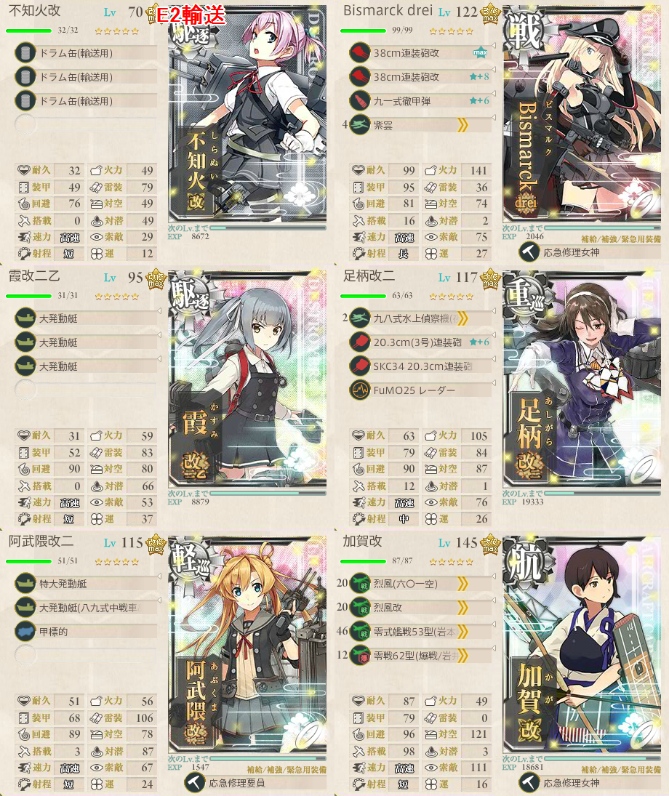
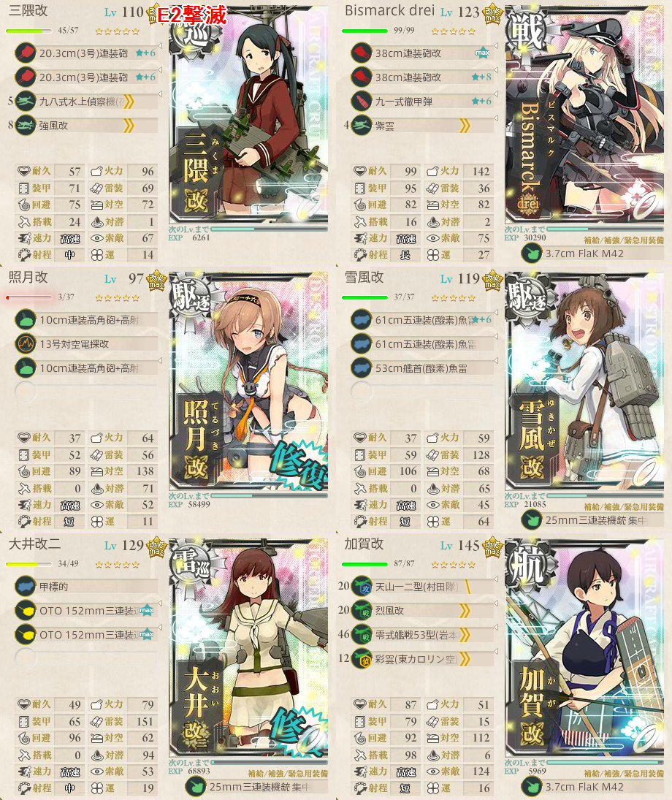

【艦これ】出撃！北東方面 第五艦隊 E2
難易度：甲
輸送作戦は簡単だが、撃滅作戦のラストダンスが地獄
自信がない場合は素直に乙以下に落とすこと
輸送作戦
構成

5 * 3 + 8 * 5 + 5 * 2 + 2 = 67
67 * 0.7 = 46.9
300 / 46 = 6.5
A勝利合計7回
支援艦隊（道中）
基地航空隊
- O, R（ボス）に1回ずつ
出撃ログ（甲）
| 回数 | 編成 | 2-5式（秋） | ルート | 戦果 |
|---|---|---|---|---|
| 1 | 不知火 Bismarck 霞 足柄 阿武隈 加賀 | 34.82 | FGIKOLPNJ | 索敵不足 |
| 2 | 不知火 Bismarck 霞 足柄 阿武隈 加賀 | 38.82 | FGIKOLPR | S勝利（蒼龍） TP67 |
| 3 | 不知火 Bismarck 霞 足柄 阿武隈 加賀 | 38.82 | FGIKOLPR | S勝利（国後） TP67 |
| 4 | 不知火 Bismarck 霞 足柄 阿武隈 加賀 | 38.82 | FGIKOLPR | S勝利（妙高） TP67 |
| 5 | 不知火 Bismarck 霞 足柄 阿武隈 加賀 | 38.82 | FGIKOLPR | S勝利（沖波） TP67 |
| 6 | 不知火 Bismarck 霞 足柄 阿武隈 加賀 | 38.82 | FGIKOLPR | A勝利（鈴谷） ゲージ破壊 |
敵編成
| マス | 敵航空戦力 | 敵潜水艦 | 備考 |
|---|---|---|---|
| G | なし | なし | 水雷戦隊 |
| K | なし | なし | 水雷戦隊 重巡1 雷巡2 軽巡1 駆逐2 複縦陣 |
| O | あり | なし | 空襲戦 ヌ改 |
| N | なし | なし | 水雷戦隊 軽巡1 駆逐5 複縦陣 |
| R | なし | なし | ボス ワルサメ 古姫 駆逐4 単縦陣 |
撃滅作戦
構成

- 索敵は2-5式（秋）で35程度要求されているものと推測される
- 加賀は攻撃機を積まず、烈風＋彩雲で置物が良い
- そうでなければ航空優勢が取れない
支援艦隊（決戦）
- 輸送の道中支援と同じ
基地航空隊
- ボス集中
- 陸攻は仕事をしないので、烈風フルで軽空母を無力化すると良い
出撃ログ（甲）
| 回数 | 編成 | 2-5式（秋） | ルート | 戦果 |
|---|---|---|---|---|
| 1 | 三隈 Bismarck 照月 雪風 大井 加賀 | 50.59 | FGIKOLPT | S勝利（風雲） |
| 2 | 三隈 Bismarck 照月 雪風 大井 加賀 | 40.69 | FGIKOLPT | A勝利（浜風） |
| 3 | 三隈 Bismarck 照月 雪風 大井 加賀 | 40.69 | FGIKOLPT | A勝利（飛鷹） |
| 4 | 三隈 Bismarck 照月 雪風 大井 加賀 | 40.69 | FGIKOLPT | A勝利（浜風） |
| 5 | 三隈 Bismarck 照月 雪風 大井 加賀 | 40.69 | FGIKOLPT | A勝利（沖波） |
| 6 | 三隈 Bismarck 照月 雪風 大井 加賀 | 40.69 | FGIKOLPT | A勝利（妙高） |
| 7 | 三隈 Bismarck 照月 雪風 大井 加賀 | 40.69 | FGIKOLPT | A勝利（祥鳳）1足りない |
| 8 | 三隈 Bismarck 照月 雪風 大井 加賀 | 40.69 | FGIKOLPT | A勝利（霧島） |
| 9 | 三隈 Bismarck 照月 雪風 大井 加賀 | 33.69 | FGIKONJ | 索敵不足 |
| 10 | 三隈 Bismarck 照月 雪風 大井 加賀 | 49.25 | FGIKOLPT | D敗北 |
| 11 | 三隈 Bismarck 照月 雪風 大井 加賀 | 49.36 | FGIKOLPT | A勝利（夕雲） |
| 12 | 三隈 Bismarck 照月 雪風 大井 加賀 | 54.95 | FGIK | 照月大破 |
| 13 | 三隈 Bismarck 照月 雪風 大井 加賀 | 54.95 | FGIKOLPT | A勝利（隼鷹） ゲージ破壊 |
- 4回目からラストダンス
敵編成
| マス | 敵航空戦力 | 敵潜水艦 | 備考 |
|---|---|---|---|
| G | なし | なし | 水雷戦隊 |
| K | なし | なし | 水雷戦隊 重巡1 雷巡2 軽巡1 駆逐2 単縦陣 |
| O | あり | なし | 空襲戦 |
| T | あり | なし | ボス 重巡姫 軽空母2 ツ級 駆逐2 単縦陣 |